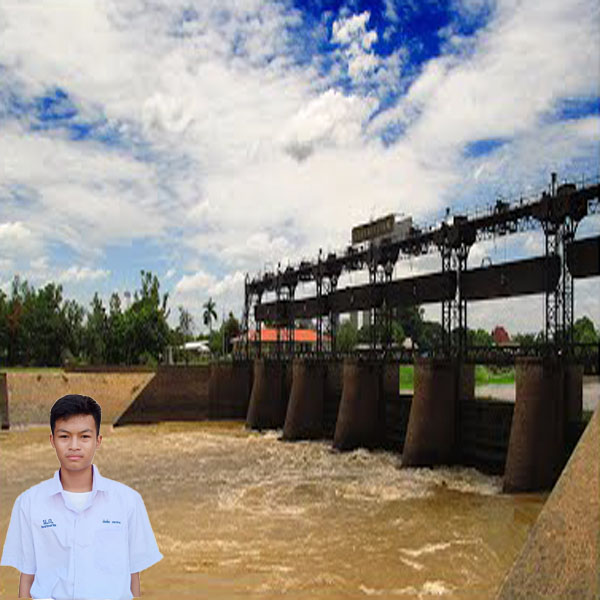
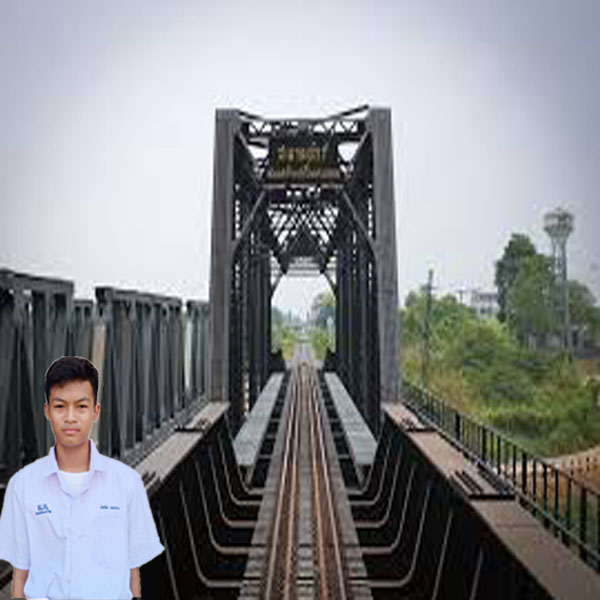

สถานที่ท่องเที่ยว
เขื่อนพระราม 6 ตั้งอยู่ที่หมู่ 10 ตำบลท่าหลวง อำเภอท่าเรือ เป็นเขื่อนทดน้ำแห่งแรกของประเทศไทย สร้างกันแม่น้ำป่าสักเพื่อเก็บน้ำไว้ใช้ในการเกษตร สร้างขึ้นในสมัยรัชกาลที่ 6
เดิมชื่อ เขื่อนพระเฑียรราชา ภายหลังเปลี่ยนชื่อเป็นเขื่อนพระราม 6 ปัจจุบันอยู่ในความดูแลของกรมชลประทาน ลักษณะของเขื่อนเป็นบานเหล็กจำนวน 5 ช่องทำหน้าที่เป็นประตูระบายน้ำขนาดใหญ่
สามารถส่งน้ำให้พื้นที่เพาะปลูกกว่า 680,000 ไร่ นักท่องเที่ยวสามารถพักผ่อนหย่อนใจ สูดอากาศบริสุทธิ์ริมเขื่อนอันเงียบสงบ หรือถ้าใครอยากถ่ายภาพเก็บไว้เป็นที่ระลึก เชื่อนพระราม 6
เป็นสถานที่ที่เหมาะกับการถ่ายภาพพระอาทิตย์ตกดินเช่นเดียวกัน
นอกจากนี้บริเวณริมเขื่อนมีศูนย์จำหน่ายสินค้าหนึ่งตำบล หนึ่งผลิตภัณฑ์ให้นักท่องเที่ยวได้ชมและเลือกซื้อกลับไปเป็นของฝาก เช่น ผลิตภัณฑ์จากมะพร้าว ดอกไม้ประดิษฐ์จากกระดาษสา เป็นต้น

สถานที่ท่องเที่ยว
สะพานจักรี เป็นสะพานรถไฟสายเหนือทอดข้ามแม่น้ำป่าสักในเขตอำเภอท่าเรือ สร้างในสมัยรัชกาลที่ 5ร.ศ. 118 (พ.ศ.2442)แต่เดิมเขียนชื่อว่า “สะพานจักรกรี”ชื่อภาษาอังกฤษว่า CHAKRKRI BRIDGE
ต่อมาภายหลังคนทั่วไปมักเขียนสะกดเป็น “สะพานจักรี”อาจเป็นเพราะสะกดตัวอักษรได้สะดวกหรืออาจเห็นว่าสร้างขึ้นในสมัยราชวงศ์จักรีจึงเขียนสะกดเช่นนี้มาจนถึงปัจจุบันสะพานจักรีสร้างขึ้นในปีรัตนโกสินทร์ศก (ร.ศ.)118
ตรงกับปีคริสต์ศักราช (ค.ศ)1899หริอพ.ศ.2442ตรงกับสมัยของพระบาทสมเด็จพระจุลจอมเกล้าอยู่หัวรัชกาลที่ 5 เป็นสะพานประวัติศาสตร์ในสมัยสงครามโลกครั้งที่ 2 ถูกเครื่องบินฝ่ายพันธมิตรทิ้งระเบิดในยามเย็นและเวลาค่ำๆ
เพื่อตัดเส้นทางลำเลียงของทหารญี่ปุ่นปัจจุบันสะพานแห่งนี้มีความเก่าแก่สร้างมากว่า 100 ปีเศษ